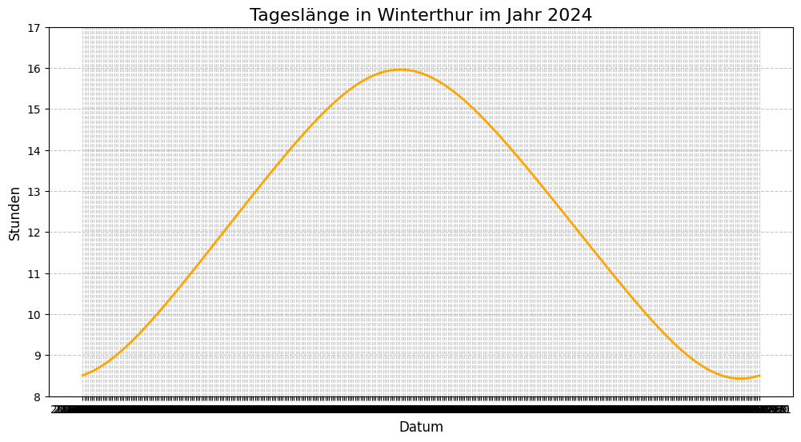

print('Hello World')Hello World


In einem Jupyter Notebook kann formatierter Text mit ausführbarem Programmcode kombiniert werden. Jupyter Nottebooks können sowohl online wie auch lokal ausgeführt werden. Der einfachheit halber erfolgt diese Demonstration online.
Text wird grundsätzlich mit Markdown formatiert. Die Onlineplattformen stellen zusätzlich menügestützte Formatierungen zur Verfügung.
In den Codezellen kann Python Code ausgeführt werden. Grundsätzlich stehen auch andere Programmiersprachen zur Verfügung. Für deren Einsatz ist der Aufwand allerdings deutlich grösser.
Um die Möglichkeiten eines Jupyter Notebooks zu demonstrieren, wird
Die Tradition will es, dass als erstes in einer neuene Programmiersprache der Computer dazu gebracht werden soll Hello World auszugeben. In der ersten Code Zelle wird dieser Tradition Rechnung getragen.
print('Hello World')Hello WorldWas geschieht in dieser Zelle? Es wird die eingebaute Funktion (man spricht im Zusammenhang mit eingebauten Funktionen von sog ‘builtins’) print() aufgerufen. Der Funktion wird in Klammern das Argument übergeben, das sie verarbeiten soll. Im vorliegenden Fall handelt es sich um einen einfachen Text, was hier als String bezeichnet wird. Strings sind jede Art von Anzeigbaren Zeichen.
Um zu Zeigen, was Python im Unterricht bieten kann, werden in der Folge einfache Rechnungen und selber geschriebene Funktionen für Standardberechnungen vorgestellt.
2 + 3 * 4142 ** 3 + 412Ohne Zusatzpakete gibt es in Python keinen Befehl quadratwurzel().
16 ** (1/2)4.0Für die direkte Berechnung der Quadratwurzel muss das die Python Math Library importiert werden. Der volle Umfang an Funktionen bzw. Methoden, welche die Python Math Library zur Verfügung stellt, sei auf deren Dokumentation verwiesen.
import math
math.sqrt(16)4.0math.log2(8)3.0Damit Resultate in den folgenden Berechnungen weiter verwendet werden können, können sie Variabeln zugewiesen werden. Variabeln können in Python grundsätzlich beliebige Namen haben. Für die Darstellung von Variabeln gilt allerdings die Konvention, sie in snake_case zu schreiben. Ausserdem gilt es, die Liste der reservierten Begriffe und eingebauter Funktionen bzw. Methoden zu berücksichtigen und nicht als Namen von Variabeln zu verwenden.
Das einer Variabel zugewiesene Resultat kann mit der Funktion print(variabel) auch ausgegeben werden.
resultat = 2 + 3 * 4
print(resultat)14Um des Beispiels willen, wird hier eine Funktion für den Satz des Pythagoras implementiert. Dies dient auch als Möglichkeit, zu zeigen, wie in Markdown Fromeln geschrieben werden können (mit der LaTeX Syntax).
\[ c = \sqrt{(a^2 + b^2)} \]
In der folgenden Zelle wird diese Formel in einer Funktion implementiert.
def pythagoras(a, b):
c = (a**2 + b**2)**(1/2)
return cpythagoras(3, 4)5.0Um in Python mit Daten zu Arbeiten, wird oft die Datenstruktur eines Pandas DataFrames verwendet. Pandas ist dabei eine Python Library für die Bearbeitung grosser Datensätze. Für eine ausführliche Darstellung sei an dieser Stelle auf die Pandas Dokumentation verwiesen. Ein DataFrame ist im Kern eine tabellarische Darstellung der Daten.
Es gibt ganz unterschiedliche Varianten einen Pandas DataFrame zu erstellen. Damit hier keine Daten konstruiert werden müssen, wurde im Vorfeld eine Datei mit den Längen der Tage in Winterthur im Jahr 2024 erstellt. Die Datei heisst data.csv.
Damit ein Pandas DataFrame erstellt werden kann, muss als erstes die Pandas Library importiert werden. Um die von dieser Library zur Verfügung gestellten Befehle mit weniger Tipp-Aufwand verwenden zu können, wird ihr ein Alias zugewiesen.
import pandas as pdDaten aus CSV-Dateien werden mit dem Befehl pd.read_csv() eingelesen. Als Argumente nimmt der Befehl den Pfad der Datenquelle als String entgegen. Zusätzlich wird mit sep=',' der Datentrenner spezifiziert. Wenn es sich beim Datentrenner um ein Komma handelt, kann das auch weggelassen werden weil es sich dabei um en Vorgabewert handelt. Um der Erklärung willen wurde das Argument im Beispiel aufgeführt.
Standardmässig werden die Daten bei Verwendung eines einzelnen Dataframes der Variabel df zugewiesen.
# Pandas DataFrame erstellen
df = pd.read_csv('data.csv', sep=',')
df.head() # zeigt die eresten fünf Zeilen des Dataframes; dient der Kontrolle| Datum | Tageslänge | |
|---|---|---|
| 0 | 2024-01-01 | 8.509065 |
| 1 | 2024-01-02 | 8.525051 |
| 2 | 2024-01-03 | 8.542440 |
| 3 | 2024-01-04 | 8.561214 |
| 4 | 2024-01-05 | 8.581352 |
In diesem Beispiel werden die Daten mit Matplotlib visualisiert. Diese Library muss, gleich wie Pandas, zuerst importiert werden. Das Beispiel basiert auf Matplotlib.pyplot.
import matplotlib.pyplot as pltIn der nächsten Zelle werden die Daten in einem Liniendiagramm visualisiert.
# Plot erstellen mit Matplotlib
plt.figure(figsize=(12, 6)) # Größe des Bildes (Breite, Höhe)
# Nimm die Spalte 'Datum' für X und 'Tageslänge' für Y
plt.plot(df['Datum'], df['Tageslänge'], color='orange', linewidth=2)
# Beschriftungen (Wichtig für den Unterricht!)
plt.title("Tageslänge in Winterthur im Jahr 2024", fontsize=16)
plt.xlabel("Datum", fontsize=12)
plt.ylabel("Stunden", fontsize=12)
plt.grid(True, linestyle='--', alpha=0.7) # Ein Gitter hilft beim Ablesen
# Den Bereich der Y-Achse festlegen (damit es schöner aussieht)
plt.ylim(8, 17)
plt.show()
Die Grafik kann noch schöner gestaltet werden.
import matplotlib.dates as mdates
import locale # ermöglicht das auslesen der Spracheinstellung
try:
# liest die Systemsprache aus
locale.setlocale(locale.LC_TIME, 'de_DE')
except locale.Error:
print("Warnung: Konnte deutsche Sprache nicht laden. Monate bleiben evtl. Englisch.")
# 1. WICHTIG: Datum sicher in ein Zeitformat umwandeln,
# damit Matplotlib weiß, wie es die Achse beschriften soll.
# (Angenommen dein DataFrame heißt 'df')
df['Datum'] = pd.to_datetime(df['Datum'])
plt.figure(figsize=(12, 6))
# Plotten
plt.plot(df['Datum'], df['Tageslänge'], color='orange', linewidth=2, label='Tageslänge')
# --- HIER SIND DIE ANPASSUNGEN ---
# Zugriff auf die aktuelle Achse, um Formatierungen vorzunehmen
ax = plt.gca()
# X-Achse: Zeige nur einen Tick pro Monat (Locator)
ax.xaxis.set_major_locator(mdates.MonthLocator())
# X-Achse: Beschrifte die Ticks mit dem Monatsnamen (Formatter)
# %B = Voller Monatsname (Januar), %b = Abkürzung (Jan)
ax.xaxis.set_major_formatter(mdates.DateFormatter('%B'))
# Damit die Monatsnamen sich nicht überlappen, rotieren wir sie leicht
plt.xticks(rotation=45)
# ---------------------------------
# Beschriftungen
plt.title("Tageslänge in Winterthur im Jahr 2024", fontsize=16)
plt.xlabel("Monat", fontsize=12)
plt.ylabel("Stunden", fontsize=12)
# Gitter an den Monatsmarkierungen ausrichten
plt.grid(True, linestyle='--', alpha=0.7)
# Y-Achsen Bereich
plt.ylim(8, 17)
# Layout straffen, damit die schrägen Labels nicht abgeschnitten werden
plt.tight_layout()
plt.show()
Mit Daten in Pandas DataFrames kann ähnlich gerechnet werden, wie in einem Tabellenkalkulationsprogramm. Das soll am Beispiel einer fiktiven Punkteliste einer Prüfung (noten.csv) gezeigt werden.
noten = pd.read_csv('noten.csv', sep=',')
noten.head()| Nachname | Vorname | Aufgabe 1 | Aufgabe 2 | Aufgabe 3 | Aufgabe 4 | Aufgabe 5 | Aufgabe 6 | Aufgabe 7 | Aufgabe 8 | Aufgabe 9 | Aufgabe 10 | |
|---|---|---|---|---|---|---|---|---|---|---|---|---|
| 0 | Müller | Hans | 4 | 2 | 5 | 0 | 3 | 4 | 1 | 5 | 2 | 3 |
| 1 | Gerber | Verena | 1 | 5 | 3 | 4 | 2 | 0 | 5 | 3 | 4 | 1 |
| 2 | Meier | Urs | 3 | 3 | 2 | 5 | 1 | 4 | 0 | 2 | 5 | 5 |
| 3 | Keller | Anna | 5 | 1 | 0 | 3 | 4 | 2 | 5 | 1 | 3 | 0 |
| 4 | Schmid | Reto | 2 | 4 | 5 | 1 | 3 | 5 | 2 | 4 | 0 | 2 |
In einem Tabllenkalkulationsprogramm werden die einzelnen Zellen mit ihren Koordinaten angesprochen. Ein Pandas DataFrame weist ein vergleichbares Koordinatensytem auf. Die einzelnen Zellen oder Bereiche können über ihre Indizes angesprochen werden. Dazu wird die Methode iloc[startzeile:endzeile,startspalte:Endzeile] verwendet. Zu beachten ist dabei, dass die Indizes bei 0 beginnen. Die Koordinaten im Beispiel ([:,2:]) bedeuten alle Zeilen und alle Spalten ab der Spalte mit Index 2.
Entsprechend funktioniert das Zusammenzählen wie in der folgenden Code Zelle gezeigt. Weil die Funktion .sum() stanardmässig Spalten (axis=0) summiert, muss für das Zeilenweise zusammenzählen explizit axis=1 gesetzt werden.
noten['Total'] = noten.iloc[:,2:].sum(axis=1)
noten.head()| Nachname | Vorname | Aufgabe 1 | Aufgabe 2 | Aufgabe 3 | Aufgabe 4 | Aufgabe 5 | Aufgabe 6 | Aufgabe 7 | Aufgabe 8 | Aufgabe 9 | Aufgabe 10 | Total | |
|---|---|---|---|---|---|---|---|---|---|---|---|---|---|
| 0 | Müller | Hans | 4 | 2 | 5 | 0 | 3 | 4 | 1 | 5 | 2 | 3 | 29 |
| 1 | Gerber | Verena | 1 | 5 | 3 | 4 | 2 | 0 | 5 | 3 | 4 | 1 | 28 |
| 2 | Meier | Urs | 3 | 3 | 2 | 5 | 1 | 4 | 0 | 2 | 5 | 5 | 30 |
| 3 | Keller | Anna | 5 | 1 | 0 | 3 | 4 | 2 | 5 | 1 | 3 | 0 | 24 |
| 4 | Schmid | Reto | 2 | 4 | 5 | 1 | 3 | 5 | 2 | 4 | 0 | 2 | 28 |
Alternativ können die Zellen auch mit .loc angesprochen werden. .loc bietet den Vorzug, dass die Koordinaten mit den Namen der Zeilen- bzw. Spaltenköpfen angesprochen werden können.
noten['Total'] = noten.loc[:,'Aufgabe 1': 'Aufgabe 10'].sum(axis=1)
noten.head()| Nachname | Vorname | Aufgabe 1 | Aufgabe 2 | Aufgabe 3 | Aufgabe 4 | Aufgabe 5 | Aufgabe 6 | Aufgabe 7 | Aufgabe 8 | Aufgabe 9 | Aufgabe 10 | Total | |
|---|---|---|---|---|---|---|---|---|---|---|---|---|---|
| 0 | Müller | Hans | 4 | 2 | 5 | 0 | 3 | 4 | 1 | 5 | 2 | 3 | 29 |
| 1 | Gerber | Verena | 1 | 5 | 3 | 4 | 2 | 0 | 5 | 3 | 4 | 1 | 28 |
| 2 | Meier | Urs | 3 | 3 | 2 | 5 | 1 | 4 | 0 | 2 | 5 | 5 | 30 |
| 3 | Keller | Anna | 5 | 1 | 0 | 3 | 4 | 2 | 5 | 1 | 3 | 0 | 24 |
| 4 | Schmid | Reto | 2 | 4 | 5 | 1 | 3 | 5 | 2 | 4 | 0 | 2 | 28 |
Die anschliessende Berechnung der Note ist deutlich einfacher. Bei einem hypothetischen Punktemaximum von 50 Punkten berechnet sich die Note bei einem linearen Notenmassstab nach der Formel
\[ \frac{\text{Total}}{\text{Moeglich}} \times 5 + 1 \]
Für den Dataframe sieht das folgendermassen aus:
moeglich = 50
noten['Note'] = noten['Total'] / moeglich * 5 + 1
noten.head()| Nachname | Vorname | Aufgabe 1 | Aufgabe 2 | Aufgabe 3 | Aufgabe 4 | Aufgabe 5 | Aufgabe 6 | Aufgabe 7 | Aufgabe 8 | Aufgabe 9 | Aufgabe 10 | Total | Note | |
|---|---|---|---|---|---|---|---|---|---|---|---|---|---|---|
| 0 | Müller | Hans | 4 | 2 | 5 | 0 | 3 | 4 | 1 | 5 | 2 | 3 | 29 | 3.9 |
| 1 | Gerber | Verena | 1 | 5 | 3 | 4 | 2 | 0 | 5 | 3 | 4 | 1 | 28 | 3.8 |
| 2 | Meier | Urs | 3 | 3 | 2 | 5 | 1 | 4 | 0 | 2 | 5 | 5 | 30 | 4.0 |
| 3 | Keller | Anna | 5 | 1 | 0 | 3 | 4 | 2 | 5 | 1 | 3 | 0 | 24 | 3.4 |
| 4 | Schmid | Reto | 2 | 4 | 5 | 1 | 3 | 5 | 2 | 4 | 0 | 2 | 28 | 3.8 |
Gegenüber der Berechnung in einem Tabellenkalkulationsprogramm bietet Pandas im gezeigten Zusammenhang drei Vorteile: